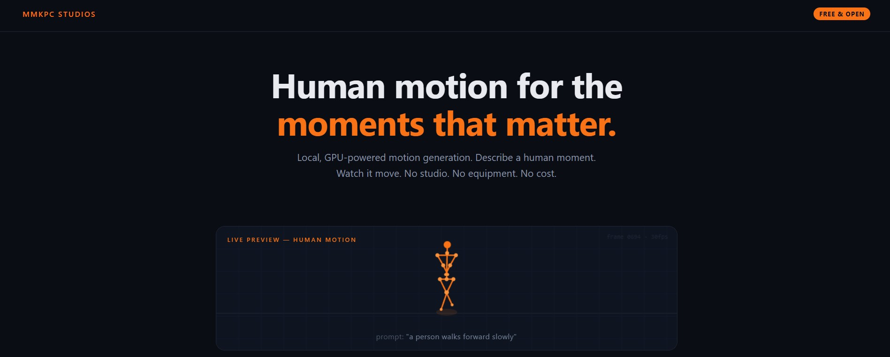

{kind=link}
Creative input
Start with a sentence describing the moment, action, tempo, or attitude instead of hand-authoring every pose.
Technical portfolio / procedural motion
A local motion pipeline for turning direction into performance.
KiMoDo explores a practical production question: how far can text-to-motion move when the generation loop runs on the artist's own GPU?
Built by Matthew Mitchell / MMKPC Studios

The project
A motion request should begin as a creative instruction, not as a rigging exercise.
KiMoDo is the production-facing layer around NVIDIA's motion-generation stack: a local workflow for testing prompts, generating human movement, reviewing the result, and carrying it into the rest of a character pipeline.
Keep the creative decision close to the artist. Keep the compute close to the project.
The operating loop
The workflow is deliberately legible: each handoff is visible, testable, and ready to connect to a wider DCC pipeline.
Production value
Start with a sentence describing the moment, action, tempo, or attitude instead of hand-authoring every pose.
Keep the generation loop on local hardware for repeatable iteration, private material, and a clear compute budget.
Inspect the result as motion before it enters a character, shot, or game scene. The browser preview makes the handoff visible.
Carry the generated skeleton motion forward as BVH, then retarget and refine it where the final character pipeline lives.
Why it matters
For games, cinematics, and character work, the useful question is not whether generation replaces animation. It is whether it creates a better starting point, faster, while preserving the artist's final control.
Public portfolio surface
This public mirror presents the workflow, visual proof, and production intent. The original development repository, machine-specific setup, and private implementation details remain separate.